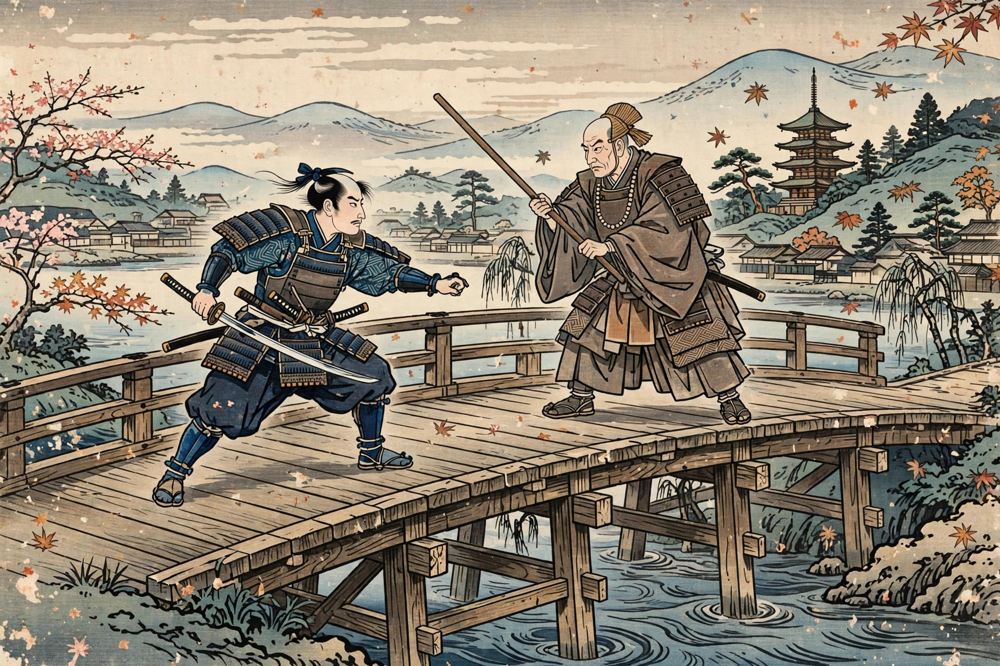

| Minamoto no Yoshitsune | |
|---|---|
| Born | c. 1159 |
| Died | 15 June 1189, Hiraizumi, Mutsu Province |
| Clan | Minamoto (Seiwa Genji) |
| Father | Minamoto no Yoshitomo |
| Brother | Minamoto no Yoritomo |
| Retainer | Musashibō Benkei |
Minamoto no Yoshitsune (源 義経, c. 1159 – 15 June 1189) was a military commander of the Minamoto clan of Japan in the late Heian and early Kamakura periods. The younger half-brother of Minamoto no Yoritomo, founder of the Kamakura shogunate, Yoshitsune won a series of brilliant victories that destroyed the rival Taira clan in the Genpei War — and then, falling under Yoritomo's suspicion, was hunted down and driven to suicide. He is one of the most popular tragic heroes of Japanese history and literature.
Yoshitsune was an infant when his father Yoshitomo was killed after the Heiji Rebellion of 1160. Spared by Taira no Kiyomori, he was raised at the temple of Kurama-dera north of Kyoto — where legend says he learned swordsmanship from the tengu king Sōjōbō — and later placed under the protection of Fujiwara no Hidehira in Hiraizumi in the far north. Tradition also gives him his famous retainer, the giant warrior-monk Benkei, whom he defeated in a duel on Gojō Bridge.
Joining Yoritomo's uprising in 1180, Yoshitsune displayed dazzling generalship. In 1184 he surprised the Taira at Ichi-no-Tani by leading horsemen down a precipitous cliff path into their camp. In 1185 he won the naval battle of Yashima and then annihilated the Taira fleet at Dan-no-ura in the Shimonoseki Strait, where the child emperor Antoku drowned. These victories ended the war and secured Minamoto supremacy.
Yoritomo, jealous and suspicious of his brother's popularity and of honours Yoshitsune had accepted from the retired emperor Go-Shirakawa, refused him entry to Kamakura and soon ordered his arrest. Yoshitsune fled again to Hidehira in Hiraizumi; after Hidehira's death, his son Yasuhira, under pressure from Yoritomo, attacked Yoshitsune's residence at the Koromogawa in 1189. Benkei died defending the gate — standing, in legend — and Yoshitsune took his own life with his wife and children. A famous later legend held that he had instead escaped to the continent and become Genghis Khan.
Yoshitsune is the hero of the war tale Heike Monogatari traditions, the Noh play Funa Benkei, and the kabuki classic Kanjinchō. The Japanese sympathy for the doomed hero is sometimes called hōgan-biiki — "sympathy for the lieutenant" — after his court rank of hōgan.